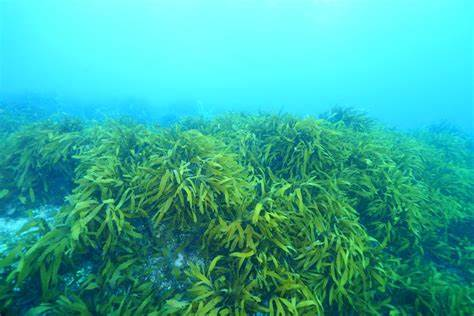

<!DOCTYPE html>
<html lang="ko">
	<head>
		<meta charset="utf-8">
		<title>미래 식품-조류/title>
		<link rel="icon" type="image/png" href="images/favicon.png">
		<link rel="stykesheet" href="style.css">
	</head>
	<body>
		<header class="page-header">
			<h1><a href="index.html">미래 식품의 소개</a></h1>
		</header>
		<div class="contents wrapper">
			<article>
				
        <p>
          조류
        </p>
				<p>
					열량이 높아 식량난을 해결할 수 있습니다.
          사료를 주거나 배설물을 치우지 않아도 되므로 키우기 쉽습니다.
          환경보호에 도움이 됩니다.
				</p>
			</article>
			<aside>
				<h2 class="sub-title">다른 식품</h3>
				<ul class="sub-menu">
					<li><a href="insect.html">곤충</a></li>
					<li><a href="meat.html">배양육</a></li>
				</ul>
			</aside>
		</div>
	<footer>
		<p>다양한 미래 식품에 대해 소개합니다</p>
	</footer>
	</body>
</html>
